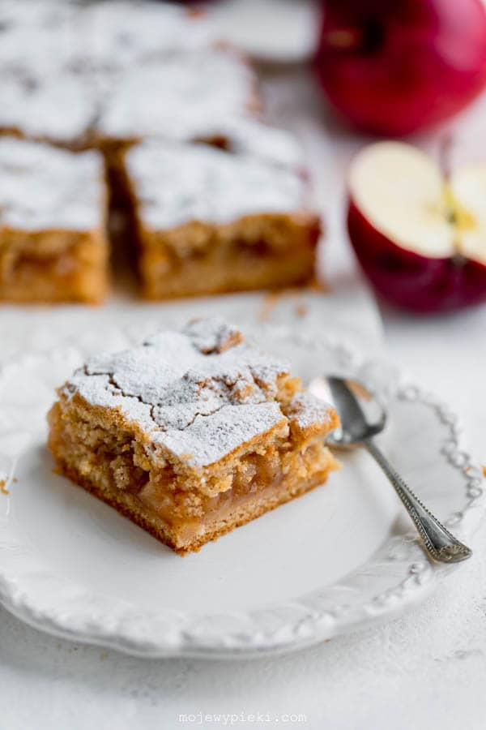

Szarlotka domowa
Oto przepis na pyszną szarlotkę domową — klasyk wśród ciast jabłkowych!
Składniki i sposób przygotowania pochodzą bezpośrednio z przepisu na Moje Wypieki.
Składniki na ciasto kruche
- 300 g mąki pszennej
- 200 g masła
- 1 łyżeczka proszku do pieczenia
- 1 łyżeczka zmielonego cynamonu
- 1 duże jajko
- 1 żółtko (z dużego jajka)
- 90 g drobnego cukru do wypieków
Składniki na nadzienie jabłkowe
- 1,5 kg jabłek odmiany szarlotkowej
- 1 łyżka soku z cytryny
- 2 łyżki cukru
- 1 łyżeczka zmielonego cynamonu
Sposób przygotowania
- Wszystkie składniki na ciasto umieść w misie malaksera i zmiksuj — ciasto będzie gęste. Jeśli będzie klejące, schłódź je w lodówce ok. 60 minut.
- Jabłka obierz, usuń gniazda nasienne, pokrój w kostkę. Wymieszaj z cukrem, podsmaż aż lekko zmiękną i odparuje sok. Dodaj cynamon i ostudź.
- Formę (np. 24×24 cm) wyłóż papierem do pieczenia. Ciasto podziel na 2 części — jedną wyłóż na spód formy.
- Na ciasto wyłóż nadzienie jabłkowe, a na wierzch pokrusz drugą część ciasta.
- Piec w temperaturze 180 °C przez ok. 50 minut. Po upieczeniu wystudzić; po wystudzeniu ciasto jest stabilniejsze. Można posypać cukrem pudrem.
Definicje użyte w przepisie
- Ciasto kruche
- Ciało ciasta przygotowane z mąki, masła, jajek, cukru i proszku do pieczenia — kruche i maślane.
- Nadzienie jabłkowe
- Mieszanka pokrojonych jabłek, cukru, soku z cytryny i cynamonu — podsmażana do miękkości i odparowania soku.
Tabela składników
| Składnik |
Ilość |
Uwagi |
| Mąka pszenna |
300 g |
Zimne |
| Masło |
200 g |
| Proszek do pieczenia |
1 łyżeczka |
Do ciasta kruchego |
| Cynamon (zmielony) |
1 łyżeczka |
Do ciasta |
| Jajko + żółtko |
1 + 1 |
Duże jajka |
| Cukier drobny do wypieków |
90 g |
Dla słodyczy ciasta |
| Kucharka |
Musi być szczęśliwa |
Więcej informacji oraz oryginalny przepis znajdziesz na stronie: Szarlotka domowa — Moje Wypieki
Gdy piekę szarlotkę, mój poziom szczęścia rośnie jak cukier2, a stres maleje szybciej niż H2O odparowuje z gorącego piekarnika!